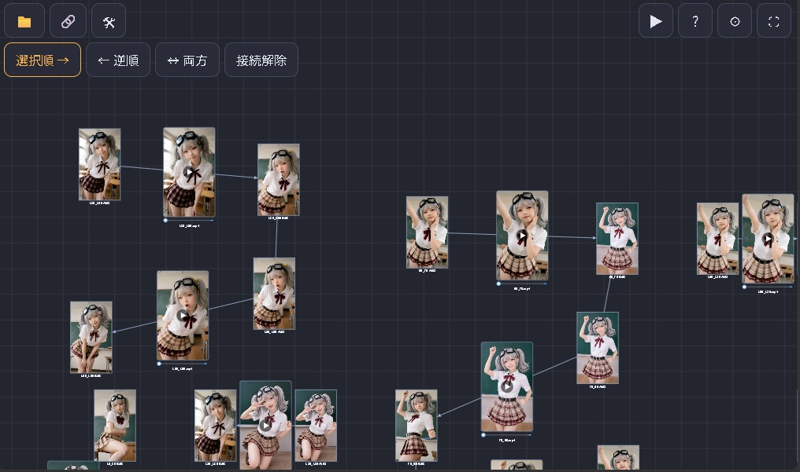

キーフレームマップ
キャラクターのキーフレーム静止画と、その間をつなぐモーション動画を「状態遷移図」のように配置して、継ぎ目の少ない待機アニメーションを連続・ランダム再生するためのツールです。

1. このアプリでできること
- ノード＝キーフレーム静止画（ポーズ）。キャンバス上に好きなだけ置けます。
- 矢印＝ノードからノードへのモーション動画。向きが「どのポーズからどのポーズへ動くか」を表します。
- 矢印の中間に動画プレビューが表示され、シークスライダーで開始ノード・動画・終端ノードを行き来して確認できます。
- 右上の ▶ で、ノードと矢印をたどりながら静止画と動画を連続再生できます。リンク先がなければランダムに選んで再生し続けます。
- 配置と接続は JSON として保存・読み込みできます。
2. 基本の流れ
- ペンシルモードでキャンバスをタップし、ノードを追加します（名前を入力、または画像を選択）。
- 接続編集モードでノードを2つ選び、「選択順 →」「← 逆順」「↔ 両方」で矢印をつなぎます。
- 矢印を選んで長押しし、モーション動画ファイルを指定します。ノードも長押しで画像を指定できます。
- レイアウト・タグモードでノードを動かし、ピンチでプレビューの大きさを整えます。ノード・矢印にはタグも付けられます（4 章）。
- 📁 から JSON を保存します。右上の ▶ で連続再生を確認します。
画像・動画をまとめて取り込みたいときは、📁 →「メディア再リンク」で複数のファイルを選ぶと、静止画は新規ノード、動画は未リンクの矢印として一気に追加できます（9 章）。
3. 画面のボタン
| 位置 | ボタン | 内容 |
|---|---|---|
| 左上 | 📁 ファイル | JSON の保存・読み込み、ZIP の保存・読み込み、メディア再リンク、生成した静止画の保存、新規作成 |
| 左上 | モードアイコン | 現在のモードのアイコン（✏️／🔗／📐／✋）。タップして編集モードを切り替え（ペンシル／接続編集／レイアウト／ハンド） |
| 左上 | 🛠（編集） | アンドゥ／リドゥと、ノードの自動並べ替え（タグ／画像の類似度）（12 章） |
| 左上 2 行目 | 接続ボタン | 接続編集モードのときだけ表示：選択順 →／← 逆順／↔ 両方／接続解除 |
| 右上 | ▶ 再生 | 連続再生のポップアップを開く |
| 右上 | ? ヘルプ | このページを新しいタブで開く |
| 右上 | ⚙ 設定 | 静止画の再生秒数と、同じ箇所の最大ループ回数を設定（8 章） |
| 右上 | ⛶ フルスクリーン | 全画面表示の切り替え |
4. 編集モード
| モード | 操作 |
|---|---|
| ✏️ ペンシル | 何もないところをタップすると入力ダイアログが開き、ノード名を入力して「追加」、または「画像から作成」で画像を選ぶとノードを追加できます。画像から作った場合、名前を空にするとノード名は画像のファイル名になります。「動画から作成」で動画を選ぶと、タップした位置に未リンクの矢印として読み込まれ、先頭・最終フレームのノードが自動生成されて接続されます（9 章）。 |
| 🔗 接続編集 | 次のどれかの組み合わせを選んで、接続ボタンを使います（6 章）。
|
| 📐 レイアウト・タグ | キャンバスをスワイプすると破線の四角で範囲選択でき、範囲に入ったノードと未リンクの矢印がまとめて選択されます（つながっている矢印はノードに合わせて動きます）。選択したものは破線の四角で囲まれます。四角の内側をスワイプすると選択したものを一括で移動し、四隅のハンドルをスワイプすると、反対側の角を基準にノード・矢印の位置を拡大縮小します（個々の大きさは変わりません）。ノードを 1 つだけ選択中にピンチすると静止画プレビューのサイズ、矢印を選択中にピンチすると動画プレビューのサイズを、縦横比を保ったまま変更できます。キャンバスの移動は 2 本指スワイプで行います。 タグ：ノードまたは矢印を長押しすると出るメニューの「🏷 タグを追加」から、「任意のタグ」（名前を入力。カンマ区切りで複数可）または既に設定したタグのリストを選んで付けられます。範囲選択の四角の内側を長押しすると、選択したノード・矢印すべてにタグを追加できるほか、「🏷 タグを一括削除」で、選択範囲に設定されているタグのリストから選んだタグをまとめて外せます。タグはファイル名の下に「タグ名×」の形で表示され、×をタップするとそのタグを削除します（他のモードでも削除できます）。 |
| ✋ ハンド | スワイプでキャンバスをスクロールします。 |
5. すべてのモードで使える操作
- タップ：ノードまたは矢印を選択（何もないところをタップすると選択解除）。
- スワイプ：キャンバスをスクロール（レイアウト・タグモードでは範囲選択、選択範囲の四角の内側から始めた場合は移動、四隅からは拡大縮小）。
- マウスのホイールボタンのドラッグ：どのモードでもキャンバスをスクロール移動します。
- 移動中の自動スクロール：ノード・未リンクの矢印を移動しているとき、ポインタを画面の端へ近づけるとキャンバスが自動でスクロールし、そのまま移動を続けられます。
- Ctrl＋左クリック（Mac は
⌘＋クリック）：ノード・矢印を選択に追加／解除します（レイアウトモードに切り替わります）。選択したものは破線の四角で囲まれ、一括で移動（四角の内側をスワイプ）・削除（Deleteキー）できます。つながっている矢印は移動できませんが、Deleteで接続解除できます。 - 2 本指スワイプ：どのモードでもキャンバスを移動します（レイアウト・タグモードでサイズ変更の対象を選択中でも、2 本指を平行に動かせば移動だけ行います）。
- ピンチ：キャンバスのズームアウト／ズームイン。PC ではマウスホイールでもズームできます。
- 長押し：長押ししたノード／矢印のサブメニューを表示します。範囲選択の四角の内側ではタグを追加／タグを一括削除／コピー／切り取り／削除、何もないところでは貼り付けのメニューが出ます。
- ノード：ファイル名選択（画像）／直前の動画の最終フレームから生成／直後の動画の先頭フレームから生成（つながっている動画のフレームを静止画として設定。動画が複数あるときは選択）／ファイル解除／名前を変更／タグを追加（レイアウト・タグモードのみ）／ノードを削除（つながっていた矢印は残り、動画があれば未リンクの矢印になります。動画のない矢印は削除されます）
- 矢印：ファイル名選択（動画）／ファイル解除／タグを追加（レイアウト・タグモードのみ）／矢印を削除（未リンクの矢印は、ファイル解除でも削除されます）
キーボード・ドラッグ＆ドロップ
- Delete（Mac は
delete）キー：リンク済みのノード・矢印は接続解除、未リンクのノード・矢印は削除します。ノードの接続解除は、そのノードにつながる矢印を外します（動画があれば未リンクの矢印に、なければ削除。ノードは残ります）。ノードが選択されていなければ矢印が対象です。 - Ctrl+C／Ctrl+X／Ctrl+V（Mac は
⌘）：選択中のノード・矢印・範囲選択をコピー／切り取り／貼り付けします（サブメニューからも実行できます）。選択ノード同士をつなぐ矢印は一緒にコピーされ、単独で選んだ矢印や未リンクの矢印は未リンクの矢印として貼り付けられます。切り取りで選択外のノードとつながっていた矢印は、未リンクの矢印として残ります。貼り付けは、キーでは最後にポインタがあった位置（なければ画面中央）、メニューでは長押しした位置に行い、貼り付けたものは範囲選択の状態（レイアウト・タグモード）になります。コピーした内容はアプリ内にのみ保持されます。 - Ctrl+A（Mac は
⌘A）：ノードと未リンクの矢印をすべて選択します（レイアウト・タグモードに切り替わります）。 - Ctrl+Z（Mac は
⌘Z）：アンドゥ。Ctrl+Y または Ctrl+Shift+Z：リドゥ。 - ドラッグ＆ドロップ：画像・動画ファイルをキャンバスにドロップすると、📁 →「メディア再リンク」と同じ処理（9 章）で取り込みます。
6. 矢印の接続
接続編集モードで選んだ内容によって、接続ボタンの働きが変わります。
A. ノードを 2 つ選んだとき
- 選択順 →：1 つ目に選んだノードから 2 つ目へ矢印を引きます。
- ← 逆順：2 つ目から 1 つ目へ矢印を引きます。すでに逆向きの矢印があれば、向きを入れ替えます。
- ↔ 両方：選択順と逆順の 2 本の矢印を引きます。2 本は平行にずらして表示され、それぞれに別々の動画ファイルを指定できます。
- 接続解除：選んだ 2 ノード間の矢印をすべて削除します。
B. ノードを 2 つ ＋ 未リンクの矢印を 1 本選んだとき
未リンクの矢印（動画はあるが、どのノードにもつながっていない矢印。画面では「未接続」と表示）を、選んだ 2 ノードの間につなぎます。動画ファイルはそのまま引き継がれます。
- 選択順 →／← 逆順：その向きの矢印として接続します。すでに同じ向きの矢印があるときは使えません。
- ↔ 両方：片方の向きにこの矢印を使い、もう片方の向きには動画なしの矢印を追加します。
未リンクの矢印は、ノードを選んだ状態でタップして選びます（選び直すと別の未リンクの矢印に切り替わります）。
なお、未リンクの矢印に動画を設定すると先頭・最終フレームのノードが自動で作られて接続されるため、通常はこの手動接続は不要です。接続を解除した矢印を、別のノードにつなぎ直したいときに使います。
C. リンク済みの矢印を 1 本選んだとき
- ← 逆順：矢印の向きを入れ替えます。
- ↔ 両方：逆向きの矢印（動画なし）を追加します。
- 接続解除：ノードとの接続を外して、未リンクの矢印に変換します（動画ファイルは残り、その場に残ります）。動画のない矢印は置き場がないため、削除されます。
逆向きの矢印がすでにあるときは「← 逆順」「↔ 両方」は使えません。どの場合も、2 つのノード間の矢印は向きごとに 1 本までです。
7. 動画プレビューとシーク
- 動画を指定した矢印の中間に、プレビューと再生ボタンが表示されます。プレビューの下には動画のファイル名が表示されます。未リンクの矢印は、置かれた位置にプレビューが表示されます。
- 再生前は開始ノードの静止画、再生が終わると終了ノードの静止画が表示されます（未リンクの矢印は動画のフレームが表示されます）。
- プレビュー下のスライダーをドラッグすると、シークできます。左端の青い部分が開始ノードの静止画、中央が動画、右端の青い部分が終了ノードの静止画です。
- 再生中にスライダーを動かすと一時停止し、指を離すと中間位置から再生を再開します。
8. 連続再生（▶）
右上の ▶ を押すと、大きなポップアップで再生します。右上の ✕（または Esc キー）で閉じます。
どこから始まるか
- 矢印を選択中：その動画から。
- ノードを選択中：その静止画から。
- 何も選択していない：画像・動画が指定されているものからランダムに選んで開始。
次に何が再生されるか
- 静止画のノードは、設定した秒数（初期値 1.5 秒）表示します。そのあと、ノードから出ている矢印の動画を再生します。矢印が複数あるときはランダムに選びます（動画が指定された矢印を優先）。
- 動画が終わると、矢印の先のノードの静止画へ進みます。
- 出ている矢印がない場合（未リンクの矢印の再生後も含む）は、存在する静止画または動画をランダムに選んで再生を続けます。
- 画像・動画が未指定のもの、またはファイルが再リンクされていないものは飛ばします。再生できるメディアが 1 つもない場合は、メッセージを出して閉じます。
設定（⚙）
- 静止画の再生秒数：静止画を表示する秒数（0.1〜60 秒、初期値 1.5 秒）。
- 同じ箇所の最大ループ回数（1〜99、初期値 5）：連続再生中に同じノード／矢印へ入ろうとして回数がこの値に達すると、強制的にランダムなノードまたは矢印へジャンプして再生を再開し、回数はリセットされます。
- 設定は端末のブラウザに保存されます。再生中に変更した値は、次の切り替えから反映されます。
縮小表示
- ✕ の左隣の ▢（最大化）と、その左隣の –（縮小表示）で、再生ウインドウの大きさを切り替えます。
- 縮小表示中はウインドウが右下に小さく表示され、キャンバスを操作できます。再生中のノードまたは矢印は黄色で強調され、画面の外にあるときは自動でそこへ移動します。
連続再生は、ブラウザが許可していれば音声付きで再生します。自動再生が制限される環境では、ミュートで再生します。
9. 保存と読み込み
- 保存（JSON）：ノードの名前・静止画ファイル名・位置・プレビューサイズ、矢印の位置・向き・動画ファイル名・プレビューサイズを保存します。
- 読み込み（JSON）：保存した JSON から復元します。
- 保存（ZIP）：JSON（
keyframe-map.json）と、使われている画像・動画ファイルを 1 つの ZIP（keyframe-map.zip）にまとめて保存します。画像・動画はmedia/フォルダに入ります（再リンクされていないメディアは含まれません）。 - 読み込み（ZIP）：ZIP 内の JSON と画像・動画を取り込み、ノード・矢印とメディアを再リンクなしで復元します。現在の内容は置き換わります。ファイルが大きいと時間がかかることがあります。
- メディア再リンク：JSON には画像・動画そのものは入らず、ファイル名とハッシュ値（ファイルの内容から計算した識別値）が入ります。読み込み後に「メディア再リンク」で画像・動画をまとめて選ぶと、まずファイル名が一致するものに割り当てます。ファイル名が見つからない場合は、ハッシュ値が一致するファイルを探して割り当て、JSON 内のファイル名も新しい名前に更新します。ファイルをリネームしたあとでも読み込めます。
- 該当しないファイルは新規として読み込み：JSON のどのファイル名にもハッシュ値にも該当しなかったファイルは、次のように新しく追加されます。
- 静止画 → 新規ノード（ノード名はファイル名）
- 動画 → 未リンクの矢印として追加され、先頭フレームと最終フレームが静止画ノードとして自動生成されます。「先頭フレームのノード → 動画の矢印 → 最終フレームのノード」の順に自動で接続されます。
- 先頭・最終フレームの自動生成：未リンクの矢印に動画ファイルが設定されたときは、再リンクだけでなく、ペンシルモードの「動画から作成」や、長押しメニューの「ファイル名選択（動画）」でも同じように生成・接続されます。生成した静止画は
動画名_first.png／動画名_last.pngという名前で、このアプリ内にだけ保持されます。📁 →「生成した静止画を保存」でファイルとして保存でき、次回のメディア再リンクで動画と一緒に選べば元どおりリンクされます。フレームを生成できなかった場合は、未リンクの矢印のまま残ります。 - 動画の再リンク時の静止画の補完：再リンクした動画が既存のリンク済みの矢印（ファイル名またはハッシュ値が一致）に当たった場合でも、その前後のノードの静止画が空であれば、動画の先頭・最終フレームから生成して設定します。画像名は入っているがファイルが未リンクのノードでも、自動生成されたと推定されるもの（ノード名の末尾が「先頭」「最終」、または画像名が
_first／_lastで終わるもの）は、矢印の始点側なら先頭フレーム、終点側なら最終フレームから再生成します。 - 新規作成：現在の内容を破棄して、まっさらな状態にします。
- 編集内容は端末のブラウザにも自動保存されます。ただし画像・動画は保存されないため、ブラウザを開き直したら再リンクが必要です。
10. JSON の形式
{
"app": "keyframe-map",
"version": 1,
"nodes": [
{ "id": "a1", "name": "待機A", "x": 0, "y": 0,
"imageFile": "idle_a.png", "imageHash": "sha256:3f2a…",
"previewW": 160, "previewH": 90,
"tags": ["立ち", "笑顔"] }
],
"arrows": [
{ "id": "r1", "from": "a1", "to": "b2",
"x": 120, "y": 40, "angle": 15.0,
"videoFile": "a_to_b.mp4", "videoHash": "sha256:9c1e…",
"previewW": 200, "previewH": 113, "tags": ["手を振る"] },
{ "id": "r2", "from": null, "to": null,
"x": 300, "y": 400, "angle": null,
"videoFile": "free.mp4", "videoHash": "sha256:41bd…",
"previewW": 200, "previewH": 113 }
]
}xy（ノード）：キャンバス上の中心座標。fromto（矢印）：始点・終点のノードid。両方nullのときは未リンクの矢印です（videoFileが必要です）。xyangle（矢印）：矢印の中間座標と向き（度）。つながっている矢印ではノードの位置から再計算されるため記録用の値です。未リンクの矢印ではxyがプレビューの中心位置として使われ、angleはnullです。previewWpreviewH：プレビューの幅・高さ。tags（ノード・矢印）：タグ名の配列。タグがないときは省略されます（省略された JSON も読み込めます）。imageHashvideoHash：ファイル内容の SHA-256 ハッシュ。32MB を超えるファイルは処理を軽くするため、サイズと先頭・中央・末尾の一部から計算します（sha256q:で始まります）。
11. ヒント・注意
- 画像・動画は同名のファイルを同じものとして扱います。別の内容でファイル名が重なると、あとから選んだものに置き換わります。
- ファイルの中身を書き換えて同じ名前で保存し直した場合は、名前が一致するのでそのままリンクされ、ハッシュは新しい内容に更新されます。
- 動画の対応形式はブラウザによって異なります（MP4/H.264 が最も広く再生できます）。
- フルスクリーンに対応していないブラウザ（iPhone の Safari など）では、「ホーム画面に追加」してアプリとして開くと全画面で使えます。
- ヘルプは新しいタブで開きます。アプリのタブに戻れば、編集中の状態と読み込んだメディアはそのまま残っています。
12. 編集メニュー（アンドゥ／リドゥ・自動並べ替え）
モードボタンの右隣の 🛠 編集 の先頭に ↶ アンドゥ／↷ リドゥ があります。ノード・矢印の追加や削除、接続、移動、サイズ変更、並べ替えなどを最大 50 回分まで戻せます（画像・動画ファイルの取り込み自体は戻せません）。
同じメニューから、ノードを自動で並べ替えます。ノードの位置が変わるだけで、接続や動画・画像の設定は変わりません。
- タグの類似度でソート：ノードに付けたタグが似ているもの（共通するタグの割合が高いもの）が近くに並ぶ順を基準にします。同じタグ構成のノードは名前順（数字は数の大きさで比較）のままで、タグのないノードは最後に名前順で並びます。
- 画像の類似度でソート：静止画を縮小して色と輪郭を比べ、似た画像が近くに並ぶ順を基準にします。この並びを矢印の交差の削減よりも優先して配置します（動画から自動生成した静止画も同様）。画像のないノードは最後に名前順で並びます。
- どちらも、ノードと動画プレビューが重ならない間隔の格子に置いたうえで、ノード同士を入れ替えて矢印の交差やノードを貫く矢印ができるだけ減るようにします。あわせて、矢印の向きができるだけ右向き（→）になるようにします（左向きは強く、縦向きは弱く避けます。往復の2本の矢印は対象外）。交差がなければ基準の並びがそのまま保たれます。
- 未リンクの矢印は、ノードの下に動画名の順で並びます。
- 並べ替えたあと、全体が画面に収まるように表示を合わせます。アンドゥで配置と表示を元に戻せます。
- 矢印が多く込み入った図では、交差を完全になくせないことがあります。完了時のメッセージに交差の件数が表示されます。数秒かかることがあります。